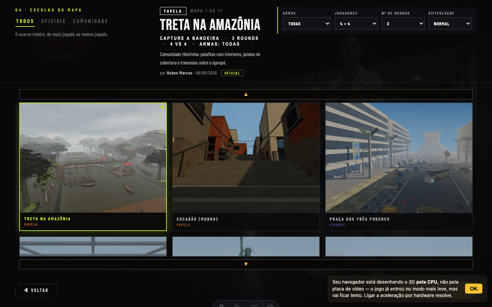
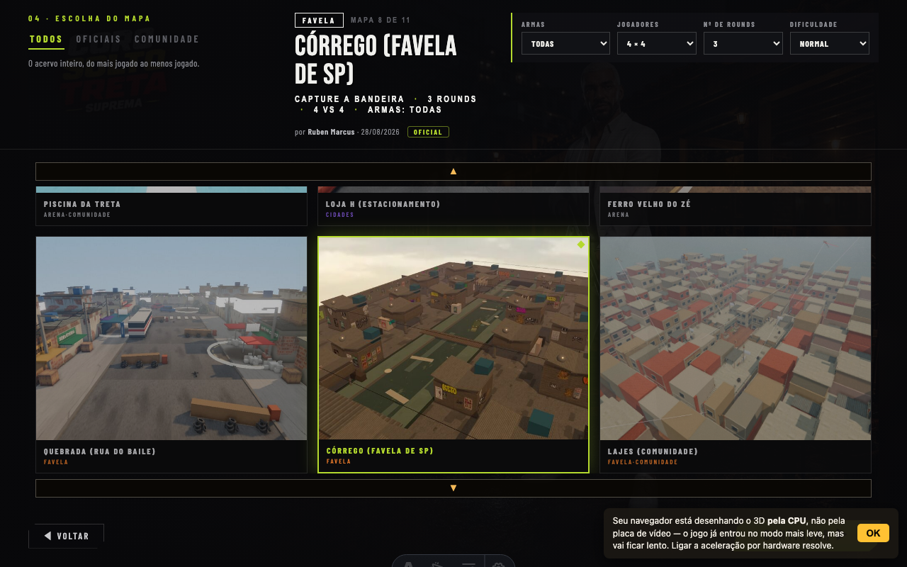

MA4 · Classificação de mapas — antes e depois
plans/26-MAPAS-ABERTOS-VISUAL.md · branch feat/mapas-abertos-visual · capturas de ?tela=maps&map=<id> em 1280×800, dev server, 26/09/2026
O que era e o que passou a ser
| mapa | ficha (#ms-cat) antes | depois | defeito que fechou |
|---|---|---|---|
| Treta na Amazônia | FAVELA | AMAZONIA | Palafita de ribeirinho vendida como laje — pedido literal do dono: "amazonia nao é favela/comunidade". Categoria nova com CAT_DESC e tradução próprias. |
| Córrego (Favela de SP) | ARENA | FAVELA | Nasceu sem entrada em MAP_CATS e vivia do fallback catsDe = ['ARENA'] — o nome do mapa dizia uma coisa, a ficha outra, calado. |
| mansão · escadão · campomorro · lajes | sem cats/autor/data | catálogo completo | Mesma classe do bug do córrego, achada pela régua nova na primeira rodada: 14 falhas em 15 mapas (7 eram dívida pré-existente, 3 foram erro meu de edição que a régua pegou antes do commit). |
Antes · depois — Amazonia

Antes · depois — Córrego

A régua que sustenta (eval:mapcat)
| cláusula | o que mede | mutante que morde |
|---|---|---|
| C1 | todo mapa do registro tem entrada própria em MAP_CATS — nenhum vive do fallback ARENA | --mutante=sem-cats (o bug do córrego) |
| C2 | toda categoria usada existe em CAT_DESC (badge, aba e tradução leem daqui) | --mutante=cat-fantasma |
| C3 | autoria e data cobrem o registro (a ficha e o servidor de multiplayer leem) | --mutante=sem-autoria |
| C4 | eixo TEMA é mutuamente exclusivo — FAVELA+AMAZONIA no mesmo mapa reprova | --mutante=dois-temas |
Verde hoje: MAPCAT-CHECK ✓ 15 mapas do registro. No check:fast do CI.